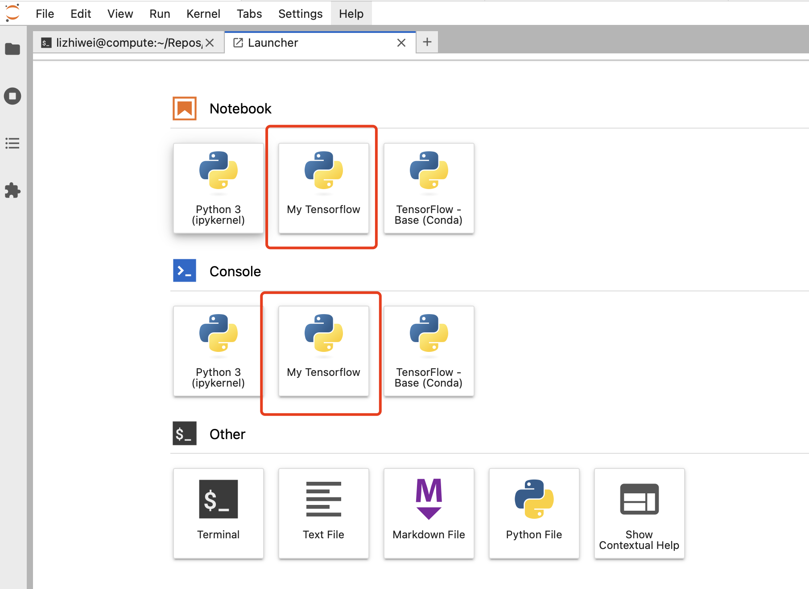

Instructions of VM setup.
Go to home page of Eye-AI catalog here. Click the Compute Platform
on the navigation bar.
Clone the Tensorflow Env
Open a Terminal window and execute:
/data/conda-clone-tensorflow.sh
Exit the terminal. Your conda environment will auto activate the next time you open Terminal.
After this step, you can see "My-Tensorflow" section on Luncher page:

Get GitHub Credential
- Create a GitHub classic access token with repo scope(s) from: https://github.com/settings/tokens
- Open Terminal on the VM
-
Substitute
<github-username>and<github-token>with the appropriate values accordingly, then execute:echo "https://<github-username>:<github-token>@github.com" > ~/.git-credentials && chmod 600 ~/.git-credentials -
Enable credential storage
git config --global credential.helper store
Clone Catalog-ml and Catalog-exec repo
- Create a directory in your homedir for GitHub Repos
mkdir Repos - In the Repo dir, clone the catalog-ml repo which contains Catalog-ML method and ML model module, and catalog-exec repo
Example:
git clone https://github.com/informatics-isi-edu/eye-ai-exec.git
3. Change the notebook and Catalog-ML tools accordingly.
4. Push the changes after test.
Setup GitHub To Work Nicely With Jupyter Notebooks.
Execute the following commands in the terminal, under Github repo directories:
git config filter.strip-notebook-output.clean 'jupyter nbconvert --ClearOutputPreprocessor.enabled=True --ClearMetadataPreprocessor.enabled=True --to notebook --stdin --stdout --log-level=ERROR'
git config filter.strip-notebook-output.smudge 'cat'
git config filter.strip-notebook-output.required true